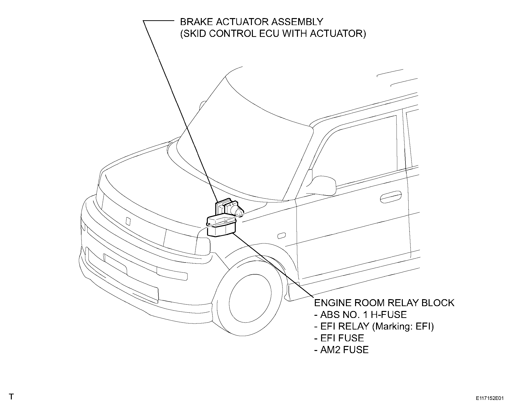
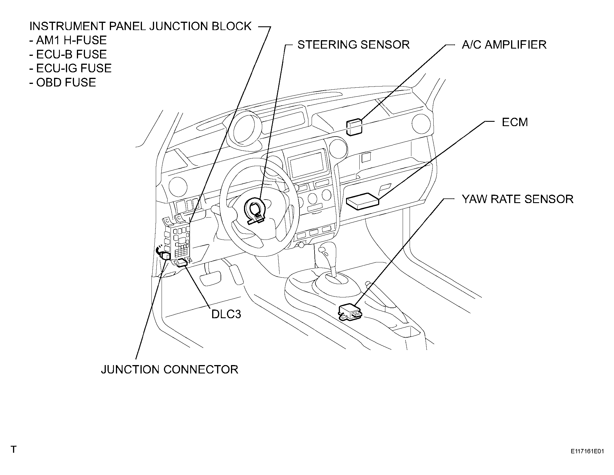

Parts Location
Fig 1: Identifying Can Communication System Part Location (1 Of 2)

Courtesy of © TOYOTA, LICENSE AGREEMENT TMS1002
Fig 2: Identifying Can Communication System Part Location (2 Of 2)

Courtesy of © TOYOTA, LICENSE AGREEMENT TMS1002